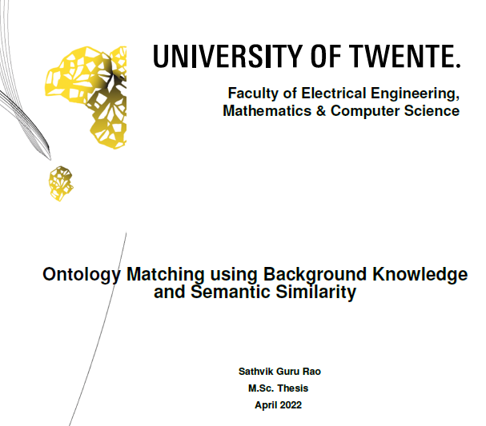
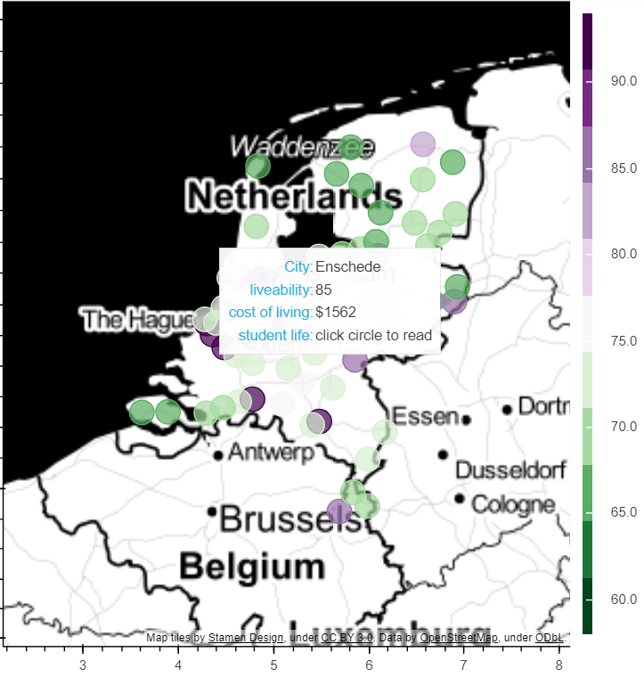

Hi, My name is Sathvik Guru Rao. I am a Master's Graduate in Computer Science with a specialization
in Data Science and Technology from the University of Twente, Netherlands.
"Learn from Experience, Learn from Data". I see a similarity between what we can do with learning from
experiences in life and learning from data and that is exactly what I want to do. I want to contribute to solving real-world problems using
data and cutting-edge technologies.

The occupational ontologies of Europe and the United States are matched based on the
semantic similarity of the entities. A rule based approach is used to establish relationships
between the entities which is new in this domain.
XLNet model is used to find the semantic similarity.

In this project, I gathered data from the web about the student life and the
liveability of different cities
in the Netherlands and visualised it on a map.
Keywords: Data Integration, Linked Data, Geonames Ontology , Web scraping.
In this project, The ImDB movie database was integrated with TV Guide
movie database to add information that were missing originally. Both
databases were in XML file format. SAX and DOM parsers were used to
read and write the XML files.
Keywords: Data Enriching, XML, SAX, DOM.
Random forest usually seems to be a more accurate model than decision tree, but the major drawback of the random forest model is the lack of interpretability, while decision trees are transparent and may be interpreted in a simple way. In this paper subgroup discovery method is applied to the random forest in order to select subgroups of entities in the dataset, which seems to be able to approximate a single random tree. This provides us with the interpretable subgroups of a dataset, which makes the random forest model less black-box than usual.
A study on COVID-19 to predict the mortality of patients using biomarkers information. In this project, different biomarkers were considered by consulting doctors and feature selection algorithms to understand the impact of biomarkers. Different Data Mining algorithms were used to predict the severity.
Social touch gesture recognition has been considered an important topic in touch morphology research, which can realize efficient and real touch human-computer interaction. This project investigates random forest, 2D CNN, and 3D CNN, and an ensemble classifier combines the three models for the social touch gesture recognition on the CoST dataset. What’s more, we compared two different methods to construct input data for CNN. The weighted average ensemble classifier outperformed the other models implemented in this experiment.